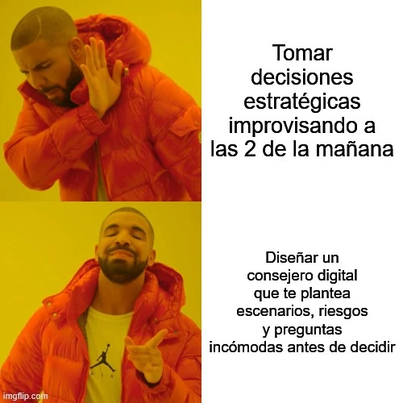

estrategIA #112 ·
Antes de decidir a las dos
El contexto
El consejero digital del número 112 sirve para explorar escenarios y hacer preguntas incómodas antes de decidir. El contraste enfrenta esa preparación con la improvisación nocturna, sin convertir al asistente en sustituto del criterio humano.
Publicado en: estrategIA #112 — Consejeros digitales y líderes humanos: la alianza que viene
Leer el texto de la imagen
Tomar decisiones estratégicas improvisando a las 2 de la mañana Diseñar un consejero digital que te plantea escenarios, riesgos y preguntas incómodas antes de decidir
Marca de la herramienta visible en el original: imgflip.com.